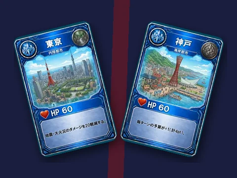
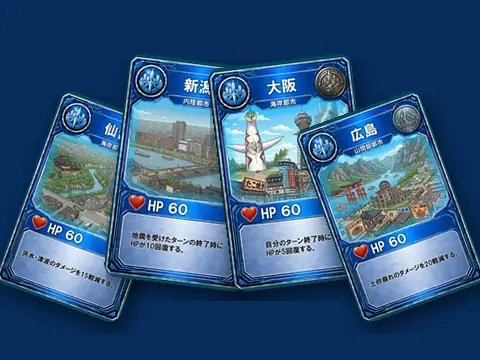
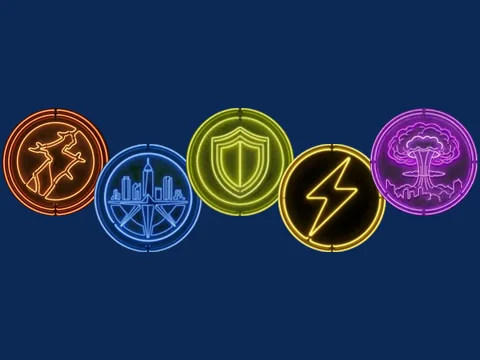
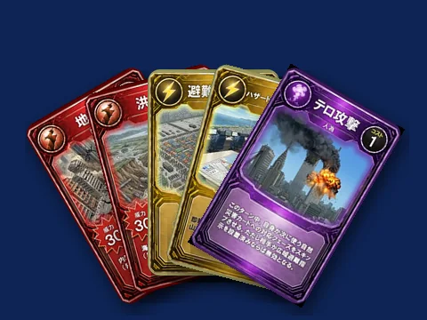
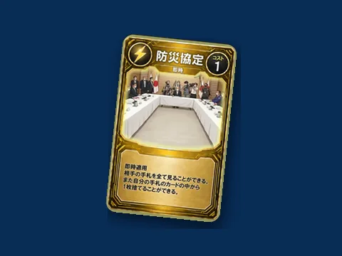
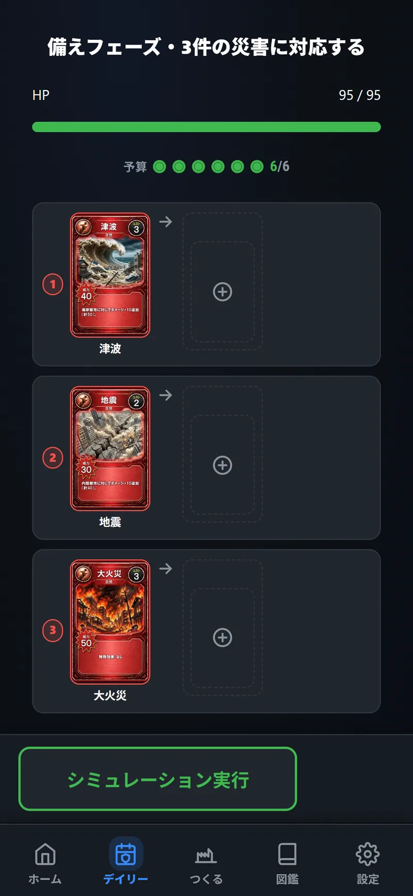
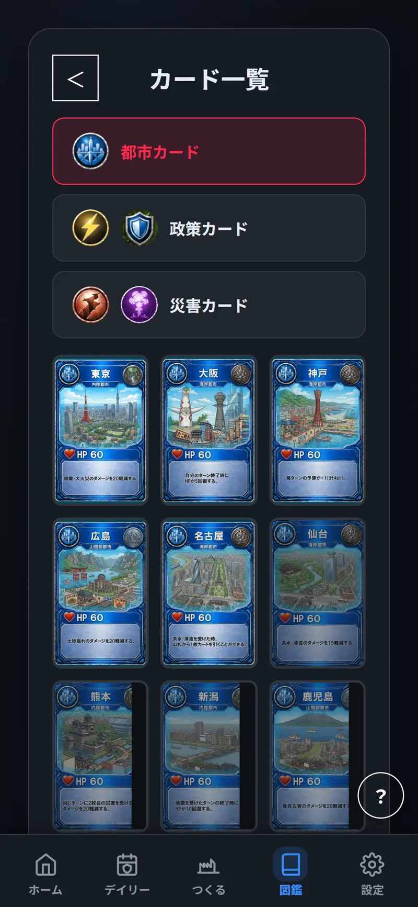

HOME/FEATURES
サブ機能 ／ 7種
1日1回、固定シードの局面に挑戦する。届く災害予報を見て、手持ちの政策カードを各災害に割り当てる。結果はストリークとしてカレンダーに記録される。カード工房で保存したマイ都市に差し替えて挑戦することもできる（公式記録とは別枠で扱う）。

都市・自然災害・人為災害・政策カードの全種を一覧で見られる。カードをタップすると拡大表示され、防災上の意味を解説するコラムが開く。
